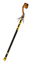
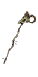
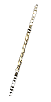
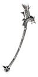
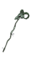
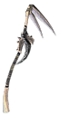
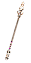
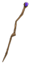

Filters:
Abbhorence
220 Damage
Speed: Very Slow
+40% Physical Damage
270 - 450 Bleeding Damage over 3.0 Seconds
+40% Bleeding Damage
40% Bleeding Resistance
40% Vitality Damage Resistance
+15% Strength
+2.0 Energy Regeneration per second
-10% Recharge
40% Increase in Projectile Speed
+4 to Hemorrhage
+2 to all skills in Barbarism Mastery
LVL 66, STR 390, INT 390
Angrboda's Stick
35 Vitality Damage
Speed: Very Slow
Difficulty : Normal
210 Vitality Decay over 3.0 Seconds
+10% Vitality Decay
+1.3 Energy Regeneration per second
Grants Skill : Death Pulse (Activated on attack)
A ring of flesh-reaping energy violently strikes any foes around you.
5.0 Second(s) Recharge
5.0 Meter Radius
137 Damage
99 Vitality Damage
33% of Attack damage converted to Health
+225% Damage to Constructs
+225% Damage to Devices
+225% Damage to Undead
+225% Damage to Ghosts
LVL 34, INT 305
Angrboda's Stick
75 Vitality Damage
Speed: Very Slow
Difficulty : Epic
444 Vitality Decay over 3.0 Seconds
+20% Vitality Decay
+2.5 Energy Regeneration per second
Grants Skill : Death Pulse (Activated on attack)
A ring of flesh-reaping energy violently strikes any foes around you.
5.0 Second(s) Recharge
5.0 Meter Radius
203 Damage
149 Vitality Damage
45% of Attack damage converted to Health
+275% Damage to Constructs
+275% Damage to Devices
+275% Damage to Undead
+275% Damage to Ghosts
LVL 46, INT 458
Angrboda's Stick
115 Vitality Damage
Speed: Very Slow
Difficulty : Legendary
690 Vitality Decay over 3.0 Seconds
+30% Vitality Decay
+3.7 Energy Regeneration per second
Grants Skill : Death Pulse (Activated on attack)
A ring of flesh-reaping energy violently strikes any foes around you.
5.0 Second(s) Recharge
5.0 Meter Radius
270 Damage
200 Vitality Damage
57% of Attack damage converted to Health
+325% Damage to Constructs
+325% Damage to Devices
+325% Damage to Undead
+325% Damage to Ghosts
LVL 56, INT 572
Apophis Serpent
Speed: Very Slow
300 - 504 Poison Damage over 3.0 Seconds
45% Pierce Resistance
45% Poison Resistance
+22 Intelligence
+70 Energy
+1.5 Energy Regeneration per second
+42 Defensive Ability
+20% Attack Speed
7% Chance to Dodge Attacks
Grants Skill : Mutagen Prototype
Bonus to All Pets:
90 Poison Damage over 3.0 Seconds
LVL 36, INT 404
Archon's Judgement
118 - 185 Lightning Damage
Speed: Very Slow
100 - 160 Electrical Burn Damage over 4.0 Seconds
100 - 160 Life Leech Damage over 4.0 Seconds
+35% Life Leech
+26 Intelligence
+355 Energy
+1.5 Energy Regeneration per second
+150 Defensive Ability
+20% Attack Speed
+1 to Triplicate
+2 to Archmage's Cloak
+1 to all skills in Time Mastery
LVL 42, INT 452
Arctic Desolator
180 Damage
150 Cold Damage
Speed: Very Slow
+35% Physical Damage
+35% Cold Damage
+35% Frostburn Damage
8.0% Chance of 2.0 second(s) of Stun
8.0% Chance of 2.0 second(s) of Freeze
14% Slowed for 3.0 Seconds
60% Cold Resistance
+70 Intelligence
-18% Energy Cost
+3.0 Energy Regeneration per second
+1 to all skills in Aqua Mastery
+1 to all skills in Geomancy Mastery
Grants Skill : Arctic Beam
LVL 61, INT 588
Azi Dahak's Staff
118 Fire Damage
Speed: Very Slow
105 - 129 Burn Damage over 3.0 Seconds
+25% Fire Damage
+25% Burn Damage
40% Fire Resistance
31% Lightning Resistance
+300 Health
+110 Energy
+1.5 Energy Regeneration per second
Bonus to All Pets:
90 Burn Damage over 3.0 Seconds
+20% Casting Speed
LVL 38, INT 428
Bandit's Clutch
60 Damage
Speed: Very Slow
Difficulty : Normal
168 Bleeding Damage over 3.0 Seconds
+15% Attack Speed
+1.4 Energy Regeneration per second
Grants Skill : Stone Form
LVL 34, INT 305
Bandit's Clutch
120 Damage
Speed: Very Slow
Difficulty : Epic
354 Bleeding Damage over 3.0 Seconds
+20% Attack Speed
+1.5 Energy Regeneration per second
Grants Skill : Stone Form
LVL 46, INT 458
Bandit's Clutch
180 Damage
Speed: Very Slow
Difficulty : Legendary
552 Bleeding Damage over 3.0 Seconds
+25% Attack Speed
+1.7 Energy Regeneration per second
Grants Skill : Stone Form
LVL 56, INT 572
Blackening of Valor
150 Damage
65 Fire Damage
65 Cold Damage
65 Lightning Damage
Speed: Very Slow
+45% Physical Damage
+10% Total Damage
4 - 6% Reduction to Enemy's Health
10.0% Chance of 3.0 second(s) of Skill Disruption
+15% Armor Protection
10% Physical Resistance
80% Vitality Damage Resistance
+1.7 Energy Regeneration per second
-30% Strength Requirement for Armor
LVL 62, INT 592
Blastos Fotia
84 Fire Damage
Speed: Very Slow
69 - 93 Burn Damage over 3.0 Seconds
+50% Fire Damage
+50% Burn Damage
50% Fire Resistance
50% Cold Resistance
+1.5 Energy Regeneration per second
+36 Defensive Ability
+20% Attack Speed
+25% Casting Speed
+2 to Screen of Light
+1 to School of Fire
LVL 35, INT 368
Burning Ice
182 - 200 Cold Damage
Speed: Very Slow
246 Burn Damage over 3.0 Seconds
+36% Burn Damage
+36% Cold Damage
18% Chance to Fumble attacks for 3.0 Seconds
18% Chance to Impaired Aim for 3.0 Seconds
+80% Frostburn Retaliation
+80% Burn Retaliation
+3.0 Energy Regeneration per second
-8% Energy Cost
+1 to all skills in Aqua Mastery
+1 to all skills in Witchcraft Mastery
Grants Skill : Aspect of Elemental Forces
LVL 58, INT 570
Butterfly
Speed: Slow
+60% Pierce Damage
+20% Instant Poison Damage
+20% Poison Damage
421 Piercing Damage
+20% Dexterity
+20% Attack Speed
+20% Casting Speed
+10% Movement Speed
25.0% Chance of -80% Recharge
+3 to all skills in Archery Mastery
Grants Skill : Windweaver
LVL 60, INT 617
Caduceus
145 - 234 Lightning Damage
Speed: Very Slow
+22% Lightning Damage
+15% Electrical Burn Damage
45% Pierce Resistance
45% Elemental Resistance
100% Poison Resistance
+450 Health
+50% Health Regeneration
+1.5 Energy Regeneration per second
+50% Energy Regeneration
+6% Total Speed
+1 to all skills in Time Mastery
LVL 50, INT 536
Carnyx Staff
111 Damage
Speed: Very Slow
10.0% Chance of 1.0 - 2.0 second(s) of Stun
10.0% Chance of 5.0 - 10.0 second(s) of Mind Control
10.0% Chance of 1.0 - 2.0 second(s) of Confusion
30% Slowed for 1.0 Seconds
+1.4 Energy Regeneration per second
+4 to Warlord's Challenge
+4 to Battleground's Menace
Grants Skill : War Horn (Activated upon taking melee damage)
The triumphant call of your war horn temporarily stuns enemies.
18.0 Second(s) Recharge
60 Energy Cost
9.6 Meter Radius
1.5 - 4.6 second(s) of Stun
LVL 42, INT 329
Charon's Oar
214 Damage
192 - 208 Cold Damage
Speed: Very Slow
Set : Charon's Oath
+40% Physical Damage
+30% Cold Damage
7.5% Chance of 3.0 second(s) of Stun
+60 Intelligence
+10% Health
10% Chance to Avoid Projectiles
+25% Damage to Ghosts
+25% Less Damage to Ghosts
+1 to all skills in Aqua Mastery
Grants Skill : Rain (Activated on attack)
Cast large torrents of water on a specific zone, assaulting any hostile units with a cold and drenching rain.
12.0 Second(s) Recharge
3.0 Meter Radius
62 Damage
111 - 134 Cold Damage
8.0% Chance of 1.5 - 3.0 second(s) of Stun
26% Slowed for 3.0 Seconds
LVL 69, INT 626
Chromatic Staff
Speed: Very Slow
10.0% Chance of +160% Elemental Damages
+25% Fire Damage
+25% Cold Damage
+25% Lightning Damage
Chance for one of the following:
152 Fire Damage
146 - 158 Cold Damage
118 - 185 Lightning Damage
52% Elemental Resistance
+25% Health Regeneration
+125 Energy
+1.5 Energy Regeneration per second
-20% Energy Cost
LVL 42, INT 452
Cocytean Embrace

Difficulty : Epic
200 Damage
Speed: Very Slow
25.0% Chance of 390 Bleeding Damage over 3.0 Seconds
+20% Stun Duration
10.0% Chance of 1.0 - 3.0 second(s) of Stun
+2.7 Energy Regeneration per second
Grants Skill : Triplicate
LVL 46, STR 250, INT 250
Cocytean Embrace
Difficulty : Legendary
300 Damage
Speed: Very Slow
25.0% Chance of 630 Bleeding Damage over 3.0 Seconds
+30% Stun Duration
15.0% Chance of 1.0 - 3.0 second(s) of Stun
+4.0 Energy Regeneration per second
Grants Skill : Triplicate
LVL 56, STR 300, INT 300
Delysid
32 - 86 Lightning Damage
Speed: Very Slow
+35% Lightning Damage
+35% Electrical Burn Damage
+18 Intelligence
+18 Dexterity
+200 Health
+1.3 Energy Regeneration per second
+2 to Cosmic Nebula
+2 to Seeker
LVL 31, INT 322
Dionysian Thyrsus
100 Damage
100 Instant Poison Damage
Speed: Very Slow
210 Poison Damage over 4.0 Seconds
62 Life Leech per Second
50% Poison Resistance
50% Life Leech Resistance
50% Energy Leech Resistance
+75% Health Regeneration
+15% Less Damage from Beastmen
Grants Skill : Healing Spell (Activated on attack)
Each attack can enable a magical spell that restores health and energy as well as accelerate health regeneration.
6.0 Second(s) Recharge
3.0 Second Duration
6.0 Meter Radius
750 Health Restored
250 Energy Restored
+250% Health Regeneration
LVL 50, INT 518
Doomfang Rod
30 Fire Damage
Speed: Very Slow
Difficulty : Normal
50 Burn Damage over 2.0 Seconds
50 Vitality Decay over 2.0 Seconds
10% of Attack damage converted to Health
+2.0 Energy Regeneration per second
LVL 28, INT 283
Doomfang Rod
60 Fire Damage
Speed: Very Slow
Difficulty : Epic
100 Burn Damage over 2.0 Seconds
100 Vitality Decay over 2.0 Seconds
12% of Attack damage converted to Health
+4.0 Energy Regeneration per second
LVL 42, INT 469
Doomfang Rod
90 Fire Damage
Speed: Very Slow
Difficulty : Legendary
200 Burn Damage over 2.0 Seconds
200 Vitality Decay over 2.0 Seconds
15% of Attack damage converted to Health
+6.0 Energy Regeneration per second
LVL 52, INT 593
Doomfang Rod
30 Cold Damage
Speed: Very Slow
Difficulty : Normal
50 Frostburn Damage over 2.0 Seconds
50 Vitality Decay over 2.0 Seconds
10% of Attack damage converted to Health
+2.0 Energy Regeneration per second
LVL 28, INT 283
Doomfang Rod
60 Cold Damage
Speed: Very Slow
Difficulty : Epic
100 Frostburn Damage over 2.0 Seconds
100 Vitality Decay over 2.0 Seconds
12% of Attack damage converted to Health
+4.0 Energy Regeneration per second
LVL 42, INT 469
Doomfang Rod
90 Cold Damage
Speed: Very Slow
Difficulty : Legendary
200 Frostburn Damage over 2.0 Seconds
200 Vitality Decay over 2.0 Seconds
15% of Attack damage converted to Health
+6.0 Energy Regeneration per second
LVL 52, INT 593
Doomfang Rod
30 Lightning Damage
Speed: Very Slow
Difficulty : Normal
50 Electrical Burn Damage over 2.0 Seconds
50 Vitality Decay over 2.0 Seconds
10% of Attack damage converted to Health
+2.0 Energy Regeneration per second
LVL 28, INT 283
Doomfang Rod
60 Lightning Damage
Speed: Very Slow
Difficulty : Epic
100 Electrical Burn Damage over 2.0 Seconds
100 Vitality Decay over 2.0 Seconds
12% of Attack damage converted to Health
+4.0 Energy Regeneration per second
LVL 42, INT 469
Doomfang Rod
90 Lightning Damage
Speed: Very Slow
Difficulty : Legendary
200 Electrical Burn Damage over 2.0 Seconds
200 Vitality Decay over 2.0 Seconds
15% of Attack damage converted to Health
+6.0 Energy Regeneration per second
LVL 52, INT 593
Dreamweaver's Rod
125 - 196 Lightning Damage
Speed: Very Slow
+33% Total Damage
33.0% Chance of 25 Reduced Resistances for 3.0 Seconds
+1.5 Energy Regeneration per second
+10% Attack Speed
+2 to Triplicate
+1 to all skills in Witchcraft Mastery
LVL 40, INT 470
Druidic Heirloom
95 Instant Poison Damage
Speed: Very Slow
Difficulty : Normal
+1.4 Energy Regeneration per second
Grants Skill : Herbal Remedy
LVL 34, INT 305
Druidic Heirloom
190 Instant Poison Damage
Speed: Very Slow
Difficulty : Epic
+1.5 Energy Regeneration per second
Grants Skill : Herbal Remedy
LVL 46, INT 458
Druidic Heirloom
300 Instant Poison Damage
Speed: Very Slow
Difficulty : Legendary
+1.7 Energy Regeneration per second
Grants Skill : Herbal Remedy
LVL 56, INT 572
Druid's Staff
56 - 126 Instant Poison Damage
Speed: Very Slow
Set : Habiliments of the Druid
90 - 120 Poison Damage over 3.0 Seconds
+15% Instant Poison Damage
+25 Intelligence
+25 Dexterity
+40% Health Regeneration
+1.5 Energy Regeneration per second
+40% Energy Regeneration
+1 to all skills in Science Mastery
Bonus to All Pets:
+20% Instant Poison Damage
+20% Poison Damage
32 Instant Poison Damage
LVL 38, INT 416
Elafros
16 - 42 Lightning Damage
Speed: Very Slow
+15% Lightning Damage
+15% Electrical Burn Damage
5% Elemental Resistance
+14 Intelligence
+15% Health Regeneration
+1.1 Energy Regeneration per second
+15% Energy Regeneration
+2 to Electrical Field
+2 to Magnetize
LVL 12, INT 144
Emberseal
84 Fire Damage
Speed: Very Slow
63 - 84 Burn Damage over 3.0 Seconds
+25% Fire Damage
+25% Burn Damage
43% Pierce Resistance
43% Fire Resistance
+22 Intelligence
+80 Energy
+1.5 Energy Regeneration per second
+36 Defensive Ability
+1 to all skills in Lifegiving Mastery
+1 to all skills in Witchcraft Mastery
LVL 35, INT 368
Etherborn Reverie
120 Fire Damage
120 Lightning Damage
Speed: Average
+30% Fire Damage
+60% Burn Damage
+30% Lightning Damage
+60% Electrical Burn Damage
39 Energy Leech over 3.0 Seconds
+15% Intelligence
+1.5 Energy Regeneration per second
+40% Casting Speed
7% Chance to Dodge Attacks
7% Chance to Avoid Projectiles
Grants Skill: Ether Ring (Activated on attack)
Overflowing etherborn energy bursts from the staff in all directions and explodes upon contact, briefly immobilizing enemies.
3.0 Second(s) Recharge
8 Projectile(s)
1.5 Meter Radius
50 Damage
90 Fire Damage
90 Lightning Damage
1.0 second(s) of Immobilization
LVL 55, INT 560
Eye of Divination
26 Fire Damage
17 Cold Damage
17 Lightning Damage
Speed: Very Slow
+25% Elemental Damages
12.0% Chance of +100% Total Damage
25% Elemental Resistance
+250 Energy
+1.4 Energy Regeneration per second
+10% Increased Experience
+2 to Synchronism
+2 to Physical Ward
+1 to all skills in Time Mastery
+1 to all skills in Witchcraft Mastery
LVL 32, INT 314
Eye of Osiris
189 Fire Damage
Speed: Very Slow
210 Bleeding Damage over 3.0 Seconds
+35% Bleeding Damage
+35% Fire Damage
+35% Burn Damage
70% Fire Resistance
50% Poison Resistance
+37 Intelligence
+37 Dexterity
+2.0 Energy Regeneration per second
20% less Energy Reserved
-20% Reduction to all Requirements
+2 to all skills in Witchcraft Mastery
LVL 49, INT 536
Fafnir's Heart
220 Vitality Damage
Speed: Very Slow
480 - 540 Bleeding Damage over 3.0 Seconds
+20% Bleeding Damage
+20% Vitality Damage
20.0% Chance of 100% Physical Resistance
50% Fire Resistance
50% Vitality Damage Resistance
+1.7 Energy Regeneration per second
+10% Total Speed
25% Increase in Projectile Speed
Grants Skill : Blood Boil (Activated upon taking melee damage)
A pool of all-consuming blood replenishes your health as it feeds on the bodies of nearby creatures.
15.0 Second(s) Recharge
8.0 Meter Radius
200 Bleeding Damage per Second
200 Vitality Damage
100% of Attack damage converted to Health
LVL 62, INT 655
Faxi Staff

60 Damage
Speed: Very Slow
159 - 249 Poison Damage over 3.0 Seconds
2.0% Chance of 110% Reduction to Enemy's Health
20 Vitality Damage
+300 Health
+1.4 Energy Regeneration per second
-25% Recharge
+1 to all skills in Science Mastery
+1 to all skills in Chaos Mastery
Grants Skill : Briar Wall
Bonus to All Pets:
10% Physical Resistance
LVL 43, INT 329
Fingerbone of Boreas
185 - 200 Cold Damage
Speed: Very Slow
+40% Cold Damage
+40% Frostburn Damage
35 Reduced Resistances for 3.0 Seconds
+30 Intelligence
+180 Energy
+1.5 Energy Regeneration per second
+66 Defensive Ability
+25% Attack Speed
+2 to Hydrothermal Explosion
+2 to all skills in Aqua Mastery
LVL 49, INT 554
Fumarole
30 - 45 Damage
30 - 45 Cold Damage
Speed: Very Slow
+30% Physical Damage
+30% Cold Damage
+30% Frostburn Damage
20% Chance of:
80% reduced Defensive Ability for 2.0 Seconds
1.0 Second(s) of Freeze
+1.4 Energy Regeneration per second
+1 to all skills in Aqua Mastery
Grants Skill : Freezing Blast
LVL 30, STR 304, INT 152
Fulminator
23 - 70 Lightning Damage
Speed: Very Slow
16 - 100 Electrical Burn Damage over 4.0 Seconds
10.0% Chance of +100% Lightning Damage
17% Fire Resistance
20% Lightning Resistance
+148 Health
+1.2 Energy Regeneration per second
LVL 22, INT 246
Gaian Thyrsus
75 Instant Poison Damage
Speed: Very Slow
Difficulty : Normal
33% Chance for one of the following:
20 Reduced Resistances for 3.0 Seconds
50% Chance to Fumble attacks for 3.0 Seconds
1.0 second(s) of Confusion
+1.4 Energy Regeneration per second
Bonus to All Pets:
45 Poison Damage over 3.0 Seconds
LVL 28, INT 283
Gaian Thyrsus
185 Instant Poison Damage
Speed: Very Slow
Difficulty : Epic
33% Chance for one of the following:
30 Reduced Resistances for 3.0 Seconds
50% Chance to Fumble attacks for 3.0 Seconds
1.5 second(s) of Confusion
+1.5 Energy Regeneration per second
Bonus to All Pets:
90 Poison Damage over 3.0 Seconds
LVL 42, INT 469
Gaian Thyrsus
290 Instant Poison Damage
Speed: Very Slow
Difficulty : Legendary
33% Chance for one of the following:
40 Reduced Resistances for 3.0 Seconds
50% Chance to Fumble attacks for 3.0 Seconds
2.0 second(s) of Confusion
+1.7 Energy Regeneration per second
Bonus to All Pets:
162 Poison Damage over 3.0 Seconds
LVL 52, INT 593
Gem of the Serpent Priest
76 Vitality Damage
Speed: Very Slow
150 Poison Damage over 3.0 Seconds
25.0% Chance of +100% Poison Damage
25.0% Chance of +100% Vitality Damage
30% Poison Resistance
30% Vitality Damage Resistance
+1.4 Energy Regeneration per second
+2 to Sever Minds
+2 to Rot Zone
+1 to all skills in Witchcraft Mastery
+1 to all skills in Science Mastery
LVL 31, INT 314
Geomancer Staff
80 Damage
Speed: Very Slow
Difficulty : Normal
+30% Physical Damage
+1.4 Energy Regeneration per second
+1 to all skills in Geomancy Mastery
Grants Skill : Fissure
LVL 28, INT 275
Geomancer Staff
180 Damage
Speed: Very Slow
Difficulty : Epic
+45% Physical Damage
+1.5 Energy Regeneration per second
+2 to all skills in Geomancy Mastery
Grants Skill : Fissure
LVL 42, INT 461
Geomancer Staff
280 Damage
Speed: Very Slow
Difficulty : Legendary
+60% Physical Damage
+1.7 Energy Regeneration per second
+3 to all skills in Geomancy Mastery
Grants Skill : Fissure
LVL 52, INT 585
Geras' Walking Stick
146 - 158 Cold Damage
Speed: Very Slow
50% Pierce Resistance
50% Elemental Resistance
50% Poison Resistance
+24 Intelligence
+355 Health
+350 Energy
+1.5 Energy Regeneration per second
+100% Casting Speed
-10% Movement Speed
100% Increase in Projectile Speed
+2 to Synchronism
LVL 42, INT 452
Glowing Rod

24 Fire Damage
Speed: Slow
+10% Fire Damage
+10% Burn Damage
40.0% Chance of 21 - 39 Burn Retaliation over 3.0 Seconds
+1.0 Energy Regeneration per second
+2 to Numbing Magic
LVL 7, INT 110
God Freezer
235 - 243 Cold Damage
Speed: Very Slow
+35% Cold Damage
+35% Frostburn Damage
30 Cold Damage
30 Lightning Damage
12.0% Chance of 1.0 - 5.0 second(s) of Freeze
15.0% Chance of 45% Slowed for 3.0 Seconds
+15% Energy
+3.2 Energy Regeneration per second
+20% Attack Speed
+20% Casting Speed
+3 to Torrential Flow
+3 to Ire of Storms
+1 to all skills in Aqua Mastery
LVL 62, INT 702
Goldbristle
120 Fire Damage
60 Lightning Damage
Speed: Very Slow
33.0% Chance of +100% Elemental Damages
44% Bleeding Resistance
44% Elemental Resistance
+1.7 Energy Regeneration per second
-20% Recharge
+1 to all Skills
LVL 64, INT 639
Goroggos
150 - 250 Damage
Speed: Very Slow
+50% Physical Damage
100 - 1000 Burn Damage over 10.0 Seconds
15% Physical Resistance
25% Reduction in Burn Duration
-10.0 Health Regeneration per second
-10.0 Energy Regeneration per second
+25% Total Speed
+2 to all skills in Barbarism Mastery
+2 to all skills in Geomancy Mastery
Grants Skill : Fires of Armageddon
LVL 66, STR 528, INT 1
Guan Yin's Healing Rod
Speed: Very Slow
93 - 114 Poison Damage over 3.0 Seconds
+155 Health
+20% Health Regeneration
+50 Energy
+1.2 Energy Regeneration per second
+20% Energy Regeneration
+28 Defensive Ability
Grants Skill : Regrowth
LVL 25, INT 280
Guiding Light
140 Lightning Damage
Speed: Very Slow
+55% Pierce Damage
+55% Lightning Damage
140 Piercing Damage
8.0% Chance of 2.0 second(s) of Petrify
75% Poison Resistance
+250 Health
+180% Health Regeneration
+200 Energy
+180% Energy Regeneration
+30% Attack Speed
+2 to Electrostatic Veil
+2 to Outburst
Grants Skill : Titanic Bolt
LVL 58, INT 570
Hades' Scepter
200 Fire Damage
Speed: Very Slow
96 Burn Damage over 3.0 Seconds
+30% Fire Damage
+30% Burn Damage
44% Elemental Resistance
+34 Intelligence
+300 Energy
+1.5 Energy Regeneration per second
+150 Defensive Ability
+1 to Physical Ward
+2 to Magma Barrier
Grants Skill : Ancestral Horn
Bonus to All Pets:
40 Burn Damage over 2.0 Seconds
LVL 49, INT 554
Hades' Soul Extractor
293 Vitality Damage
Speed: Very Slow
Set : Hades' Bone Regalia
+50% Vitality Damage
+75% Life Leech
30% Pierce Resistance
30% Bleeding Resistance
120% Vitality Damage Resistance
+10.0 Health Regeneration per second
+50% Damage to Undead
+50% Damage to Ghost
+50% Damage to Humans
Grants Skill : Death Spiral
LVL 73, INT 716
Hadopelagian Relic
130 Cold Damage
Speed: Very Slow
Set : Hadopelagian Garb
120 - 141 Burn Damage over 3.0 Seconds
+33% Burn Damage
+33% Cold Damage
10 Reduced Resistances for 3.0 Seconds
25% Fire Resistance
+1.4 Energy Regeneration per second
+50% Damage to Plants
+25% Less Damage from Plants
+2 to Triplicate
+1 to all skills in Necromancy Mastery
LVL 42, STR 470
Hailstorm Rod
110 Cold Damage
Speed: Very Slow
+30% Cold Damage
90 Piercing Damage
15% Reduced Offensive Ability Retaliation for 3.0 Seconds
15% Slowed Attack Retaliation for 3.0 Seconds
+42 Dexterity
+25% Attack Speed
80% Increase in Projectile Speed
+2 to Oceanic Might
+2 to Flash Freeze
+1 to all skills in Archery Mastery
Grants Skill : Torrent (Activated on attack)
Hail numerous ice shards towards enemies. Each projectile has a chance of piercing through the first target to seek another.
38 Energy Cost
6 Projectile(s)
25% Chance to pass through Enemies
90 Piercing Damage
110 Cold Damage
LVL 47, INT 530
Hecate's Rod
185 - 194 Cold Damage
Speed: Very Slow
+10% Cold Damage
+55% Life Leech
30% Chance for one of the following:
21% Reduction to Enemy's Health
11% Energy Drain (100% of lost Energy as Damage)
10% of Attack damage converted to Health
19% Elemental Resistance
+30 Intelligence
+1.5 Energy Regeneration per second
+15% Total Speed
+2 to all skills in Necromancy
Grants Skill : Snowstorm (Activated on attack)
Freeze a small area, casting a small snowstorm that chills any enemy standing in the area of effect.
10.0 Second(s) Recharge
50 Energy Cost
6.0 Second Duration
4.0 Meter Radius
135 Frostburn Damage per Second
50% Slower Movement for 1.5 Seconds
LVL 49, INT 536
Heka Staff
58 Fire Damage
58 Cold Damage
58 Lightning Damage
Speed: Very Slow
30% Elemental Resistance
+31 Intelligence
+200 Energy
+1.5 Energy Regeneration per second
-25% Recharge
-25% Energy Cost
50% Increase in Projectile Speed
+30% Less Damage from Magical
LVL 39, INT 452
Hestia's Fire

92 Fire Damage
Speed: Very Slow
75 Burn Damage over 3.0 Seconds
8% Physical Resistance
15% Fire Resistance
15.0% Chance of 400 Burn Retaliation over 8.0 Seconds
75% Increased Projectile Speed
+5 to Fiery Strikes
Bonus to All Pets:
33 Burn Damage over 3.0 Seconds
33 Burn Retaliation over 3.0 Seconds
LVL 36, INT 374
Hoarfrost
113 - 123 Cold Damage
Speed: Very Slow
+25% Cold Damage
+25% Frostburn Damage
20.0% Chance of 2.0 - 3.0 second(s) of Freeze
43% Pierce Resistance
43% Cold Resistance
43% Lightning Resistance
50% Reduced Freeze Duration
+23 Intelligence
+1.5 Energy Regeneration per second
+46 Defensive Ability
+2 to Shore Uprising
LVL 40, INT 428
Hungering Scythe
94 - 103 Vitality Damage
Speed: Average
+10% Total Damage
20.0% Chance of 177 Vitality Decay over 3.0 Seconds
75 Life Leech over 3.0 Seconds
+20% Life Leech with +100% Improved Duration
20% Cold Resistance
20% Vitality Damage Resistance
+5.0 Energy Regeneration per second
+1 to Cold Hand of Death
+1 to Degeneracy
LVL 37, INT 422
Hydromancer's Focus
25 - 35 Cold Damage
25 - 35 Lightning Damage
Speed: Very Slow
Difficulty : Normal
60 Frostburn Damage over 3.0 Seconds
12% Elemental Resistance
12% Vitality Damage Resistance
+1.4 Energy Regeneration per second
Grants Skill : Rime Star
LVL 28, INT 290
Hydromancer's Focus
50 - 70 Cold Damage
50 - 70 Lightning Damage
Speed: Very Slow
Difficulty : Epic
129 Frostburn Damage over 3.0 Seconds
20% Elemental Resistance
20% Vitality Damage Resistance
+1.4 Energy Regeneration per second
Grants Skill : Rime Star
LVL 42, INT 476
Hydromancer's Focus
90 - 120 Cold Damage
90 - 120 Lightning Damage
Speed: Very Slow
Difficulty : Legendary
207 Frostburn Damage over 3.0 Seconds
28% Elemental Resistance
28% Vitality Damage Resistance
+1.4 Energy Regeneration per second
Grants Skill : Rime Star
LVL 52, INT 600
Ilektrismos
51 - 117 Lightning Damage
Speed: Very Slow
+50% Lightning Damage
15% Chance of:
99 Burn Damage over 3.0 Seconds
99 Electrical Burn Damage over 3.0 Seconds
+50% Electrical Burn Damage
1.0 - 3.0 second(s) of Stun
25% Fire Resistance
40% Lightning Resistance
25% Poison Resistance
+80 Energy
+1.5 Energy Regeneration per second
+36 Defensive Ability
LVL 35, INT 368
Ironwood Staff

78 - 90 Cold Damage
Speed: Very Slow
+20% Cold Damage
+20% Frostburn Damage
20 - 37 Bonus Damage
10.0% Chance of 1.0 - 3.0 second(s) of Stun
+20% Armor Protection
27% Pierce Resistance
27% Poison Resistance
+1.5 Energy Regeneration per second
+36 Defensive Ability
+4 to Earthshock
LVL 35, INT 368
Kára's Stirrer
20 - 28 Cold Damage
Speed: Very Slow
15.0% Chance of +80% Elemental Damages
+50% Stun Duration
10.0% Chance of 2.0 - 3.0 second(s) of Confusion
1 - 100 Lightning Retaliation
+1.4 Energy Regeneration per second
+10% Total Speed
10% Chance to Dodge Attacks
+1 to all skills in Aqua Mastery
Grants Skill : Storm Orb (Activated on attack)
Each attack has a chance of releasing orbs charged with elemental forces.
3 Projectile(s)
24 Elemental Damage
78 - 136 Lightning Damage
50% Chance to Fumble attacks for 3.0 Seconds
50.0% Chance of 1.0 second(s) of Stun
LVL 41, INT 337
Ker's Fetish
59 Fire Damage
Speed: Very Slow
Difficulty : Normal
+25% Fire Damage
+1.3 Energy Regeneration per second
+1 to all skills in Witchcraft Mastery
LVL 28, INT 305
Ker's Fetish
136 Fire Damage
Speed: Very Slow
Difficulty : Epic
+30% Fire Damage
+1.4 Energy Regeneration per second
+2 to all skills in Witchcraft Mastery
LVL 42, INT 458
Ker's Fetish
216 Fire Damage
Speed: Very Slow
Difficulty : Legendary
+40% Fire Damage
+1.6 Energy Regeneration per second
+3 to all skills in Witchcraft Mastery
LVL 52, INT 572
Kirin
60 - 76 Vitality Damage
Speed: Very Slow
7.0% Chance of 35% Reduction to Enemy's Health
+10% Armor Protection
5% Physical Resistance
25% Pierce Resistance
25% Elemental Resistance
25% Poison Resistance
+1.2 Energy Regeneration per second
LVL 26, INT 280
Kuan Ti's Sorrow
Speed: Very Slow
+30% Elemental Damages
Chance for one of the following:
189 Fire Damage
185 - 194 Cold Damage
145 - 234 Lightning Damage
8% Reduction to Enemy's Health
44% Pierce Resistance
44% Fire Resistance
60 Frostburn Retaliation over 3.0 Seconds
60 Electrical Burn Retaliation over 3.0 Seconds
60 Burn Retaliation over 3.0 Seconds
+40 Intelligence
+40 Dexterity
+1.5 Energy Regeneration per second
+120 Defensive Ability
+10% Attack Speed
LVL 51, INT 536
Lei Kun's Gnarled Staff
145 - 234 Lightning Damage
Speed: Very Slow
+20% Elemental Damages
15% Physical Resistance
60% Pierce Resistance
+30 Intelligence
+50% Health Regeneration
+1.5 Energy Regeneration per second
+100 Defensive Ability
12% Chance to Dodge Attacks
+3 to Astral Mergence
Grants Skill : Angelic Altar
LVL 47, INT 536
Locus of Crantor
80 Damage
80 Vitality Damage
Speed: Very Slow
10% Reduction to Enemy's Health
10% of Attack damage converted to Health
100% Vitality Damage Resistance
10% Health Reduction Retaliation
+15.0 Health Regeneration per second
+15.0 Energy Regeneration per second
Grants Skill : Synchronism
LVL 41, STR 300, INT 1
Lug, the Goomaker
75 Instant Poison Damage
Speed: Very Slow
750 Poison Damage over 3.0 Seconds
+75% Poison Damage
15.0% Chance of 40 Reduced Resistances for 3.0 Seconds
33% Slowed for 3.0 Seconds
100% Poison Resistance
15% Chance of:
200 Instant Poison Retaliation
1.0 Stun Retaliation
50% Slowed Attack Retaliation for 3.0 Seconds
50% Slowed Movement Retaliation for 3.0 Seconds
+3 to Poison Weapons
+3 to Eternize
Grants Skill : Mucky Air (Activated when equipped)
The Goomaker's power has its drawbacks, as seen by the sticky trail it leaves all around it, slowing both nearby allies and enemies.
Cannot be dispelled.
10.0 Meter Radius
10% Slowed for 1.5 Seconds
-10% Total Speed
LVL 64, INT 650
Mettlewreck
252 Lightning Damage
Speed: Very Slow
+30% Lightning Damage
+30% Electrical Burn Damage
+30% Instant Poison Damage
+30% Poison Damage
300 Vitality Decay over 3.0 Seconds
+30% Vitality Damage
+30% Vitality Decay
-20% Attack Speed
+35% Casting Speed
+5 to Atomic Burst
+5 to Sever Minds
Grants Skill : Mettle Test (Activated on attack)
Are your enemies still trying to resist? Test their resolve with a never-ending stream of raw magical force.
1.5 Second(s) Recharge
Affects up to 4 targets
60 Energy Cost
125 Lightning Damage
160 Instant Poison Damage
125 Vitality Damage
LVL 65, INT 596
Moros Nyx
252 Vitality Damage
Speed: Very Slow
+20% Total Damage
121 - 151 Vitality Decay over 3.0 Seconds
10.0% Chance of +300% Vitality Decay
42% Fire Resistance
50% Life Leech Resistance
50% Energy Leech Resistance
+400 Health
+220 Energy
+1.5 Energy Regeneration per second
Bonus to All Pets:
+20% Vitality Damage
80 Vitality Damage
LVL 48, INT 554
Mournful Rose
Speed: Very Slow
300 - 600 Bleeding Damage over 3.0 Seconds
300 - 600 Poison Damage over 3.0 Seconds
80 Piercing Damage
+24% Armor Protection
75% Pierce Resistance
75% Bleeding Resistance
75% Poison Resistance
+80% Pierce Damage Retaliation
+80% Instant Poison Retaliation
66 - 77 Piercing Retaliation
+80% Bleeding Retaliation
66 - 77 Instant Poison Retaliation
+80% Poison Retaliation
+1.8 Energy Regeneration per second
+50% Damage to Undead
LVL 65, INT 612
Naturespeaker's Staff
20 Instant Poison Damage
Speed: Very Slow
Set : Naturespeaker's Outfit
63 Poison Damage over 3.0 Seconds
+25% Poison Damage
10.0% Chance of 2.0 - 5.0 second(s) of Confusion
+15 Intelligence
+20% Health Regeneration
+1.5 Energy Regeneration per second
+20% Energy Regeneration
LVL 14, INT 222
Necromancer's Staff
26 - 32 Vitality Damage
Speed: Very Slow
Set : Necromancer's Habiliment
+10% Vitality Damage
6 - 45 Life Leech over 3.0 Seconds
15.0% Chance of 50% Reduction to Enemy's Health
+1.0 Energy Regeneration per second
+50 Damage to Undead
+1 to Summon Undead Minion
LVL 10, INT 144
Necropolis Staff
25 - 35 Cold Damage
Speed: Very Slow
Difficulty : Normal
25 - 35 Piercing Damage
-6% Health
+2.0 Energy Regeneration per second
-6% Attack Speed
+1 to all skills in Necromancy Mastery
Bonus to All Pets:
24 Piercing Damage
24 Cold Damage
+5% Health
LVL 28, INT 267
Necropolis Staff
50 - 75 Cold Damage
Speed: Very Slow
Difficulty : Epic
50 - 75 Piercing Damage
-9% Health
+4.0 Energy Regeneration per second
-9% Attack Speed
+2 to all skills in Necromancy Mastery
Bonus to All Pets:
36 Piercing Damage
36 Cold Damage
+10% Health
LVL 28, INT 267
Necropolis Staff
90 - 120 Cold Damage
Speed: Very Slow
Difficulty : Legendary
90 - 120 Piercing Damage
-12% Health
+6.0 Energy Regeneration per second
-12% Attack Speed
+3 to all skills in Necromancy Mastery
Bonus to All Pets:
48 Piercing Damage
48 Cold Damage
+15% Health
LVL 28, INT 267
Night's Ravaging Kiss
60 Lightning Damage
60 Vitality Damage
Speed: Very Slow
Set : Night Eternal
110 Burn Damage over 2.0 Seconds
110 Frostburn Damage over 2.0 Seconds
110 Electrical Burn Damage over 2.0 Seconds
110 Vitality Decay over 2.0 Seconds
110 Life Leech over 2.0 Seconds
10% Reduction to Enemy's Health
+15% Intelligence
+3.0 Energy Regeneration per second
+50% Energy Regeneration per second
+50% Casting Speed
80% Increase in Projectile Speed
Grants Skill : Haunting Dreams
LVL 62, INT 638
Ochetos Staff
28 - 38 Cold Damage
Speed: Very Slow
+15% Cold Damage
15 - 33 Life Leech over 3.0 Seconds
17% Pierce Resistance
+1.1 Energy Regeneration per second
+20% Energy Regeneration
+32 Defensive Ability
Grants Skill : Life Drain
LVL 14, INT 178
Praxidikae

286 - 300 Vitality Damage
Speed: Very Slow
+25% Vitality Damage
+50% Life Leech
12% of Attack damage converted to Health
+32 Intelligence
+32 Dexterity
+200 Energy
+1.6 Energy Regeneration per second
+150 Defensive Ability
+25% Less Damage from Undead
LVL 51, INT 596
Pestilence

130 Instant Poison Damage
130 Vitality Damage
Speed: Very Slow
30 Reduced Resistances for 3.0 Seconds
-30% Poison Resistance
+30% Poison Retaliation
350 Vitality Decay Retaliation over 3.0 Seconds
+30% Vitality Decay Retaliation
+350 Energy
+1.7 Energy Regeneration per second
+32% Attack Speed
+40% Damage to Beastmen
+40% Damage to Humans
Grants Skill : Pestilence (Activated on attack)
The accursed staff spreads a pernicious plague all around you, devastating all the living things it infects.
24.0 Second(s) Recharge
6.0 Second Duration
60 Poison Damage per Second
60 Vitality Decay per Second
15% reduced Offensive Ability for 1.0 Seconds
15% reduced Defensive Ability for 1.0 Seconds
10% Slowed for 1.0 Seconds
LVL 66, INT 602
Pharaoh's Standard
33 Fire Damage
Speed: Very Slow
+20% Fire Damage
+20% Burn Damage
8% Physical Resistance
+50 Energy
+1.1 Energy Regeneration per second
-11% Recharge
-22% Energy Cost
LVL 14, INT 178
Prospector Rod
35 Fire Damage
Speed: Very Slow
Difficulty : Normal
210 Burn Damage over 3.0 Seconds
+20% Burn Damage with +10% Improved Duration
+1.4 Energy Regeneration per second
+30% Damage to Constructs
+30% Damage to Devices
LVL 34, INT 329
Prospector Rod
74 Fire Damage
Speed: Very Slow
Difficulty : Epic
444 Burn Damage over 3.0 Seconds
+40% Burn Damage with +20% Improved Duration
+1.5 Energy Regeneration per second
+30% Damage to Constructs
+30% Damage to Devices
LVL 46, INT 500
Prospector Rod
115 Fire Damage
Speed: Very Slow
Difficulty : Legendary
690 Burn Damage over 3.0 Seconds
+60% Burn Damage with +30% Improved Duration
+1.7 Energy Regeneration per second
+30% Damage to Constructs
+30% Damage to Devices
LVL 56, INT 647
Qa'a
100 Fire Damage
Speed: Very Slow
+15% Elemental Damages
84 - 108 Burn Damage over 3.0 Seconds
10% Elemental Resistance
+60 Energy
+1.5 Energy Regeneration per second
20% less Energy Reserved
+20% Attack Speed
+50% Casting Speed
+10% Movement Speed
LVL 37, INT 404
Reefmage's Staff
30 - 40 Cold Damage
40 - 50 Instant Poison Damage
Speed: Very Slow
Difficulty : Normal
10% Reduced Resistances for 3.0 Seconds
+1.4 Energy Regeneration per second
+1 to all skills in Science Mastery
+1 to all skills in Aqua Mastery
Grants Skill : Corrosive Pond (Activated on attack)
Fetid and erosive liquid forms a pool beneath your opponents' feet, damaging their bodies and armor as long as they stand in it.
30 Energy Cost
8.0 Second Duration
4.0 Meter Radius
40 Frostburn Damage per second
40 Poison Damage per Second
40 Reduced Armor for 1.0 Seconds
LVL 28, INT 283
Reefmage's Staff
60 - 80 Cold Damage
80 - 100 Instant Poison Damage
Speed: Very Slow
Difficulty : Epic
12% Reduced Resistances for 3.0 Seconds
+1.5 Energy Regeneration per second
+1 to all skills in Science Mastery
+1 to all skills in Aqua Mastery
Grants Skill : Corrosive Pond (Activated on attack)
Fetid and erosive liquid forms a pool beneath your opponents' feet, damaging their bodies and armor as long as they stand in it.
45 Energy Cost
8.0 Second Duration
4.0 Meter Radius
80 Frostburn Damage per second
80 Poison Damage per Second
80 Reduced Armor for 1.0 Seconds
LVL 42, INT 469
Reefmage's Staff
100 - 140 Cold Damage
140 - 180 Instant Poison Damage
Speed: Very Slow
Difficulty : Legendary
15% Reduced Resistances for 3.0 Seconds
+1.7 Energy Regeneration per second
+1 to all skills in Science Mastery
+1 to all skills in Aqua Mastery
Grants Skill : Corrosive Pond (Activated on attack)
Fetid and erosive liquid forms a pool beneath your opponents' feet, damaging their bodies and armor as long as they stand in it.
60 Energy Cost
8.0 Second Duration
4.0 Meter Radius
120 Frostburn Damage per second
120 Poison Damage per Second
120 Reduced Armor for 1.0 Seconds
LVL 52, INT 593
Riddle of the Sphinx
145 - 234 Lightning Damage
Speed: Very Slow
20.0% Chance of 630 Vitality Decay over 6.0 Seconds
10.0% Chance of +200% Vitality Damage
100 Vitality Damage
10.0% Chance of 1.0 - 3.0 second(s) of Stun
+40 Intelligence
+50% Health Regeneration
+20% Energy
+1.5 Energy Regeneration per second
+50% Energy Regeneration
+16% Total Speed
LVL 49, INT 536
Rockbender's Staff
34 Damage
Speed: Very Slow
+15% Physical Damage
5.0% Chance of 1.5 second(s) of Stun
+20 Strength
+20 Intelligence
-12 Dexterity
+125 Health
+2 to Boulder Toss
LVL 12, INT 144
Rod of Storms
67 - 150 Lightning Damage
Speed: Very Slow
Set : Raiment of the Storm
+25% Cold Damage
+25% Frostburn Damage
+25% Lightning Damage
+25% Electrical Burn Damage
3% Chance for one of the following:
1.0 - 4.0 second(s) of Stun
1.0 - 4.0 second(s) of Freeze
29 - 37 Cold Damage
+1.5 Energy Regeneration per second
+1 to all skills in Withcraft Mastery
LVL 38, INT 416
Rod of the Ancients
118 - 185 Lightning Damage
Speed: Very Slow
144 - 180 Electrical Burn Damage over 3.0 Seconds
+30% Lightning Damage
+60% Lightning Retaliation
70 - 90 Lightning Retaliation
+60% Electrical Burn Retaliation
+315 Health
+100 Energy
+1.5 Energy Regeneration per second
+200 Defensive Ability
+50% Casting Speed
-15% Recharge
+1 to all skills in Time Mastery
LVL 42, INT 452
Sakur-Aba
167 - 266 Lightning Damage
Speed: Very Slow
+25% Lightning Damage
+25% Electrical Burn Damage
25% Reduced Damage for 3.0 Seconds
+44 Intelligence
+500 Health
+3.0 Energy Regeneration per second
+30% Energy Regeneration
-20% Energy Cost
+2 to Triplicate
+1 to all skills in Witchcraft Mastery
Grants Skill : Distortion Wave (Activated on attack)
A wave of force is projected outward that forms chaotic ripples in the fabric of reality and delivers devastating damage to the body and mind of enemies.
10.0 Second(s) Recharge
68 Energy Cost
92 Damage
50% Slowed for 4.0 Seconds
LVL 52, INT 596
Scepter of Carnus
167 - 266 Lightning Damage
Speed: Very Slow
Set : Raiment of Carnus
+28% Total Damage
180 - 270 Vitality Decay over 3.0 Seconds
+15% Intelligence
+1.6 Energy Regeneration per second
50% Increase in Projectile Speed
Grants Skill : Horror (Activated on attack)
Make fear and doubt arise in hearts of your victims, crippling and preventing them from counter-attacking.
12.0 Second(s) Recharge
111 Energy Cost
6.0 Meter Radius
23 Reduced Resistances for 4.0 Seconds
41% Chance to Fumble attacks for 4.0 Seconds
41% Chance to Impaired Aim for 4.0 Seconds
LVL 31, INT 322
Scepter of Erebus
60 Fire Damage
Speed: Very Slow
Set : Vestments of Erebus
+30% Elemental Damages
+35% Life Leech
7% of Attack damage converted to Health
+24 Intelligence
+10% Attack Speed
+20% Less Damage from Demons
LVL 29, INT 322
Scepter of the Cosmos
Speed: Very Slow
+30% Elemental Damages
Chance for one of the following:
169 Fire Damage
162 - 175 Cold Damage
129 - 208 Lightning Damage
+30 Intelligence
+1.4 Energy Regeneration per second
+120 Defensive Ability
+100% Casting Speed
10% Chance to Dodge Attacks
-30% Energy Cost
50% Increase in Projectile Speed
LVL 43, INT 488
Scepter of the Liche King
50 - 60 Cold Damage
Speed: Very Slow
Difficulty : Normal
30 Energy Leech over 3.0 Seconds
+1.0 Energy Regeneration per second
-20% Energy Cost
Grants Skill : Enslave Spirit
Bonus to All Pets:
30 Energy Leech over 3.0 Seconds
-10% Recharge
LVL 20, INT 280
Scepter of the Liche King
115 - 127 Cold Damage
Speed: Very Slow
Difficulty : Epic
40 Energy Leech over 3.0 Seconds
+1.3 Energy Regeneration per second
-25% Energy Cost
Grants Skill : Enslave Spirit
Bonus to All Pets:
40 Energy Leech over 3.0 Seconds
-12% Recharge
LVL 40, INT 440
Scepter of the Liche King
197 - 209 Cold Damage
Speed: Very Slow
Difficulty : Legendary
60 Energy Leech over 3.0 Seconds
+1.5 Energy Regeneration per second
-30% Energy Cost
Grants Skill : Enslave Spirit
Bonus to All Pets:
60 Energy Leech over 3.0 Seconds
-15% Recharge
LVL 50, INT 560
Sceptre of Lamashtu
157 Fire Damage
149 - 160 Vitality Damage
Speed: Slow
"The root of pain and torture instills disgust in your heart."
+38% Fire Damage
+30% Burn Damage
+38% Vitality Damage
+30% Vitality Decay
70 Life Leech Retaliation per Second
+32 Intelligence
+60% Casting Speed
10% Chance to Avoid Projectiles
+20% Less Damage from Demons
+2 to Cone of Flames
+2 to Dividing Magic
LVL 60, INT 604
Seer's Staff
78 - 90 Cold Damage
Speed: Very Slow
+20% Elemental Damages
60 - 90 Energy Leech over 3.0 Seconds
+20 Intelligence
+180 Health
+180 Energy
+1.5 Energy Regeneration per second
+72 Defensive Ability
10% Absorption of Spell Energy
+2 to Quickening
Grants Skill : Synchronism
LVL 34, INT 368
Shepherds Crook
20 - 28 Cold Damage
Speed: Very Slow
+20% Cold Damage
+20% Frostburn Damage
10% Pierce Resistance
10% Elemental Resistance
10% Poison Resistance
+60 Health
+1.0 Energy Regeneration per second
+12 Defensive Ability
+10% Movement Speed
LVL 9, INT 110
Shikigami
120 Cold Damage
120 Lightning Damage
Speed: Very Slow
+25% Cold Damage
+25% Frostburn Damage
+25% Lightning Damage
+25% Electrical Burn Damage
40% Elemental Resistance
50% Life Leech Resistance
+27 Intelligence
+144 Energy
+1.5 Energy Regeneration per second
+2 to Rust
+2 to Celestial Quintessence
Grants Skill : Hourglass of Waning (Activated on attack)
Turn the tides of time against your foes, aging them into forseeable and feeble foes.
12.0 Second(s) Recharge
54 Energy Cost
10.0 Second Duration
5.0 Meter Radius
-19% Total Damage
-28% Offensive Ability
-19% Total Speed
LVL 43, INT 452
Shiva's Companion
104 - 113 Cold Damage
Speed: Very Slow
+15% Elemental Damages
30 Reduced Resistances for 3.0 Seconds
60% Poison Resistance
+140 Energy
+1.5 Energy Regeneration
+44 Defensive Ability
Bonus to All Pets:
40 Elemental Damage
LVL 36, INT 416
Sign of the Telkines
70 Fire Damage
70 Cold Damage
70 Lightning Damage
70 Vitality Damage
Speed: Very Slow
8% Reduction to Enemy's Health
10% of Attack damage converted to Health
100 Damage Reduction Retaliation for 3.0 Seconds
+1.4 Energy Regeneration per second
+25% Casting Speed
+25% Damage to Telkines
+25% Less damage from Telkines
+1 to all Skills
LVL 52, STR 578
Sinister Effigy

164 Fire Damage
164 Vitality Damage
Speed: Very Slow
400 Burn Damage over 4.0 Seconds
400 Vitality Decay over 4.0 Seconds
300 Life Leech over 4.0 Seconds
60 Energy Leech over 4.0 Seconds
-16% Recharge
+1 to all Skills
Bonus to All Pets:
80 Vitality Damage
8% of Attack damage converted to Health
LVL 62, INT 699
Siphon
16 - 50 Lightning Damage
Speed: Very Slow
+20% Lightning Damage
+20% Electrical Burn Damage
9 - 54 Life Leech over 3.0 Seconds
+25% Life Leech
27 - 51 Energy Leech over 3.0 Seconds
+19 Intelligence
+1.1 Energy Regeneration per second
LVL 15, INT 178
Skeletal Agonizer

130 Vitality Damage
Speed: Very Slow
+30% Pierce Damage
+30% Vitality Damage
130 Piercing Damage
+150 Health
+50% Health Regeneration
+300 Energy
+100% Energy Regeneration
+2 to Summon Undead Archer
+4 to Early Grave
Grants Skill : Bone Stakes
Bonus to All Pets:
+25% Pierce Damage
30 Piercing Damage
+120 Health
LVL 47, INT 536
Soul Quencher
145 Vitality Damage
Speed: Very Slow
Set : Umbral Raiment
60 Life Leech per Second
60 Energy Leech per Second
9% of Attack damage converted to Health
21% Elemental Resistance
100% Energy Leech Resistance
+10% Intelligence
+5.0 Health Regeneration per second
+5.0 Energy Regeneration per second
+2 to Banishing Spell
+2 to Degeneracy
Grants Skill : Soul Vortex
LVL 39, INT 416
Spectral Rod
14 - 17 Fire Damage
15 - 16 Cold Damage
13 - 18 Lightning Damage
Speed: Very Slow
+20% Elemental Damages
42 - 72 Energy Leech over 3.0 Seconds
+25% Energy Leech
15% Lightning Resistance
+17 Intelligence
+1.1 Energy Regeneration per second
+15% Attack Speed
LVL 23, INT 246
Spirochaete
54 - 64 Cold Damage
Speed: Very Slow
+20% Cold Damage
+20% Frostburn Damage
75 - 90 Poison Damage over 3.0 Seconds
15 Reduced Resistances for 3.0 Seconds
+18 Intelligence
+1.3 Energy Regeneration per second
+80 Defensive Ability
LVL 30, INT 322
Staff of Bouzyges
142 - 215 Lightning Damage
130 Instant Poison Damage
Speed: Very Slow
+60% Lightning Damage
+60% Instant Poison Damage
90 Life Leech over 3.0 Seconds
+60% Life Leech
26% reduced Offensive Ability for 3.0 Seconds
15.0% Chance of 1.0 Stun Retaliation
20% Slowed Attack Retaliation for 3.0 Seconds
-3.0 Health Regeneration per second
+5.0 Energy Regeneration per second
+2 to all skills in Science Mastery
LVL 52, INT 570
Staff of Elysium

185 - 194 Cold Damage
Speed: Very Slow
+10% Cold Damage
32% Pierce Resistance
32% Bleeding Resistance
32% Elemental Resistance
32% Poison Resistance
+200 Health
+2.0 Health Regeneration per second
+300 Energy
+2.0 Health Regeneration per second
+180 Defensive Ability
+50% Casting Speed
+2 to all skills in Aqua Mastery
+2 to all skills in Lifegiving Mastery
LVL 50, INT 536
Staff of Kheprer

38 - 47 Lightning Damage
Speed: Very Slow
+20% Cold Damage
+20% Frostburn Damage
9% of Attack damage converted to Health
22% Bleeding Resistance
22% Life leech Resistance
+1.1 Energy Regeneration per second
+30% Less Damage from Insectoids
Grants Skill : Death Ward
LVL 18, INT 212
Staff of Lugus
30 - 300 Lightning Damage
Speed: Very Slow
+50% Lightning Damage
15% Chance of:
&nnbsp;348 - 372 Electrical Burn Damage
&nnbsp;4.0 second(s) of Petrify
&nnbsp;75% Slowed for 4.0 Seconds
&nnbsp;4.0 second(s) of Skill Disruption
100% Lightning Resistance
+1.5 Energy Regeneration
+25% Attack Speed
+50% Casting Speed
10.0% Chance of -80% Recharge
+50% Damage to Plants
+1 to all skills in Science Mastery
+1 to all skills in Witchcraft Mastery
LVL 54, INT 531
Staff of Nabukhuthnusar
47 Fire Damage
Speed: Very Slow
+15% Fire Damage
+15% Burn Damage
+24 Intelligence
+20% Health Regeneration
+55 Energy
+1.1 Energy Regeneration per second
+24 Defensive Ability
Grants Skill : Colossus Form
LVL 22, INT 246
Staff of Njord
100 Damage
148 Cold Damage
Speed: Very Slow
135 - 165 Frostburn Damage over 3.0 Seconds
20% Chance to Fumble attacks for 3.0 Seconds
40% Chance of Impaired Aim for 3.0 Seconds
20% Slowed for 3.0 Seconds
+700 Energy
+10.0 Energy Regeneration per second
Grants Skill : Water Pulse (Activated on attack)
An unstoppable wave of water submerges all enemies in its way.
6 Projectile(s)
100% Chance to pass through Enemies
56 Damage
60 Frostburn Damage over 3.0 Seconds
LVL 52, INT 515
Staff of the Chosen

Speed: Very Slow
Difficulty : Normal
168 Poison Damage over 3.0 Seconds
56 Piercing Damage
+1.4 Energy Regeneration per second
40% Increase in Projectile Speed
Grants Skill : Summon Spriggling (Activated on attack)
Tree roots and plant life rise to form living creatures who's vines pull enemies back to the earth they rose from.
20.0 Second(s) Recharge
Extra Life Time 60 Seconds
2 Summon Limit
Spriggling Attributes:
Life Time 60.0 Seconds
6250 Health
471 Energy
Spriggling Abilities:
70 - 80 Damage
LVL 34, INT 314
Staff of the Chosen
Speed: Very Slow
Difficulty : Epic
354 Poison Damage over 3.0 Seconds
118 Piercing Damage
+1.5 Energy Regeneration per second
50% Increase in Projectile Speed
Grants Skill : Summon Spriggling (Activated on attack)
Tree roots and plant life rise to form living creatures who's vines pull enemies back to the earth they rose from.
20.0 Second(s) Recharge
Extra Life Time 60 Seconds
2 Summon Limit
Spriggling Attributes:
Life Time 60.0 Seconds
6250 Health
471 Energy
Spriggling Abilities:
70 - 80 Damage
LVL 46, INT 484
Staff of the Chosen
Speed: Very Slow
Difficulty : Legendary
552 Poison Damage over 3.0 Seconds
184 Piercing Damage
+1.7 Energy Regeneration per second
60% Increase in Projectile Speed
Grants Skill : Summon Spriggling (Activated on attack)
Tree roots and plant life rise to form living creatures who's vines pull enemies back to the earth they rose from.
20.0 Second(s) Recharge
Extra Life Time 60 Seconds
2 Summon Limit
Spriggling Attributes:
Life Time 60.0 Seconds
6250 Health
471 Energy
Spriggling Abilities:
70 - 80 Damage
LVL 56, INT 631
Staff of the Covenant
320 - 370 Damage
Speed: Very Slow
507 - 570 Poison Damage over 3.0 Seconds
+50% Poison Damage with +50% Improved Duration
10% Reduction to Enemy's Health
+25% Health
+600 Energy
+1.7 Energy Regeneration per second
+1 to all skills in Science Mastery
+1 to all skills in Barbarism Mastery
LVL 63, INT 639
Staff of the Deep
60 Cold Damage
Speed: Very Slow
Difficulty : Normal
60 Frostburn Damage over 3.0 Seconds
+15% Cold Damage
+15% Frostburn Damage
+1.4 Energy Regeneration per second
+1 to all skills in Aqua Mastery
LVL 34, INT 321
Staff of the Deep
120 Cold Damage
Speed: Very Slow
Difficulty : Epic
120 Frostburn Damage over 3.0 Seconds
+20% Cold Damage
+20% Frostburn Damage
+1.5 Energy Regeneration per second
+1 to all skills in Aqua Mastery
LVL 46, INT 492
Staff of the Deep
192 Cold Damage
Speed: Very Slow
Difficulty : Legendary
192 Frostburn Damage over 3.0 Seconds
+25% Cold Damage
+25% Frostburn Damage
+1.7 Energy Regeneration per second
+2 to all skills in Aqua Mastery
LVL 56, INT 639
Staff of the Falcon
21 - 64 Lightning Damage
Speed: Very Slow
+30% Lightning Damage
+30% Electrical Burn Damage
11 Piercing Damage
21% Cold Resistance
+18 Intelligence
+1.1 Energy Regeneration per second
+20% Energy Regeneration
25% Increase in Projectile Speed
+10% Damage to Beasts
LVL 18, INT 212
Staff of the Jiangshi
56 Vitality Damage
Speed: Very Slow
+15% Vitality Damage
35 Life Leech per Second
+15% Life Leech
5% of Attack damage converted to Health
+50% Damage to Plants
+1 to Degeneracy
+1 to all skills in Choas Mastery
LVL 29, INT 314
Staff of the Magi
14 Fire Damage
Speed: Very Slow
Difficulty : Normal
25 Burn Damage over 3.0 Seconds
+20% Fire Damage
+10 Intelligence
+1.0 Energy Regeneration per second
-10% Recharge
LVL 8, INT 76
Staff of the Magi
76 Fire Damage
Speed: Very Slow
Difficulty : Epic
75 Burn Damage over 3.0 Seconds
+25% Fire Damage
+20 Intelligence
+1.3 Energy Regeneration per second
-12% Recharge
LVL 34, INT 338
Staff of the Magi
154 Fire Damage
Speed: Very Slow
Difficulty : Legendary
150 Burn Damage over 3.0 Seconds
+30% Fire Damage
+30 Intelligence
+1.5 Energy Regeneration per second
-15% Recharge
LVL 46, INT 488
Staff of the Shades
110 Cold Damage
220 Vitality Damage
Speed: Very Slow
16.0% Chance of +100% Total Damage
200 Life Leech over 4.0 Seconds
12.0% Chance of 80% Physical Resistance
60% Life Leech Resistance
60% Reduced Entrapment Duration
+2 to Cold Hand of Death
+2 to Soul Chill
+2 to all skills in Necromancy Mastery
Bonus to All Pets:
+10% Total Damage
+10% Total Speed
LVL 58, INT 506
Summoner's Rod
100 Fire Damage
Speed: Slow
90 - 114 Burn Damage over 3.0 Seconds
+30% Fire Damage
+30% Burn Damage
+19 Intelligence
+215 Health
+1.5 Energy Regeneration per second
20% less Energy Reserved
+40 Defensive Ability
+2 to Heavenly Order
+2 to Guardian Angel
LVL 38, INT 404
Tefnut's Will
120 - 130 Cold Damage
Speed: Very Slow
+20% Cold Damage
+20% Frostburn Damage
+20% Lightning Damage
+20% Electrical Burn Damage
-150 Energy
-20% Attack Speed
+35% Casting Speed
Grants Skill : Splash (Activated on attack)
Wet enemies move slower and prove to be exceptionally susceptible to electrocution.
12.0 Second(s) Recharge
15 Energy Cost
8.0 Second Duration
4.0 Meter Radius
-10% Movement Speed
-10% Cold Resistance
-40% Lightning Resistance
LVL 41, INT 434
The Gatekeeper
110 Fire Damage
Speed: Very Slow
+20% Total Damage
168 - 297 Poison Damage over 3.0 Seconds
80 Instant Poison Damage
16 Reduced Resistances for 3.0 Seconds
8% Physical Resistance
+30 Intelligence
+30 Dexterity
+600 Health
+1.4 Energy Regeneration per second
+30% Attack Speed
Grants Skill : Ternion Attack
LVL 45, INT 488
The Night Mistress' Clutch
Speed: Very Slow
Difficulty : Normal
Chance for one of the following:
59 Fire Damage
32 - 86 Cold Damage
32 - 86 Lightning Damage
15 Elemental Retaliation
+1.5 Energy Regeneration per second
+1 to Time Freeze
+1 to Horror
Grants Skill : Triplicate
LVL 28, INT 305
The Night Mistress' Clutch
Speed: Very Slow
Difficulty : Epic
Chance for one of the following:
136 Fire Damage
90 - 181 Cold Damage
90 - 181 Lightning Damage
30 Elemental Retaliation
+2.7 Energy Regeneration per second
+2 to Time Freeze
+2 to Horror
Grants Skill : Triplicate
LVL 42, INT 458
The Night Mistress' Clutch
Speed: Very Slow
Difficulty : Epic
Chance for one of the following:
216 Fire Damage
167 - 266 Cold Damage
167 - 266 Lightning Damage
45 Elemental Retaliation
+4.0 Energy Regeneration per second
+3 to Time Freeze
+3 to Horror
Grants Skill : Triplicate
LVL 52, INT 572
Triteia's Staff
30 Cold Damage
40 Vitality Damage
Speed: Very Slow
Difficulty : Normal
+10% Intelligence
+1.4 Energy Regeneration per second
+10% Attack Speed
+1 to all skills in Witchcraft Mastery
LVL 28, INT 290
Triteia's Staff
66 Cold Damage
100 Vitality Damage
Speed: Very Slow
Difficulty : Epic
+15% Intelligence
+1.5 Energy Regeneration per second
+15% Attack Speed
+1 to all skills in Witchcraft Mastery
LVL 42, INT 476
Triteia's Staff
120 Cold Damage
160 Vitality Damage
Speed: Very Slow
Difficulty : Epic
+20% Intelligence
+1.7 Energy Regeneration per second
+20% Attack Speed
+2 to all skills in Witchcraft Mastery
LVL 52, INT 600
Troll's Branch
Speed: Very Slow
Difficulty : Normal
140 Bleeding Damage over 3.0 Seconds
60 Piercing Damage
+1.4 Energy Regeneration per second
+30% Damage to Plants
+30% Damage to Insectoids
LVL 34, INT 314
Troll's Branch
Speed: Very Slow
Difficulty : Epic
296 Bleeding Damage over 3.0 Seconds
128 Piercing Damage
+1.5 Energy Regeneration per second
+30% Damage to Plants
+30% Damage to Insectoids
LVL 46, INT 484
Troll's Branch
Speed: Very Slow
Difficulty : Legendary
459 Bleeding Damage over 3.0 Seconds
202 Piercing Damage
+1.7 Energy Regeneration per second
+30% Damage to Plants
+30% Damage to Insectoids
LVL 56, INT 631
Wand of Dead Sailors

100 Cold Damage
100 Vitality Damage
Speed: Very Slow
+33% Cold Damage
+33% Vitality Damage
10% Reduction to Enemy's Health
35% Cold Resistance
30% Poison Resistance
35% Vitality Damage Resistance
+110 Energy
+1.7 Energy Regeneration per second
10% Absorption of Spell Energy
20% increase in Projectile Speed
+10% Damage to Undead
+15% Less Damage from Undead
Grants Skill : Ghostly Shores
LVL 51, INT 578
Wrath of Thalassa
100 - 200 Damage
100 - 200 Vitality Damage
Speed: Very Slow
+30% Total Damage
25% Chance of:
40% of Attack damage converted to Health
40% Energy Drain (100% of lost Energy as Damage)
4.0 second(s) of Skill Disruption
80% Lightning Resistance
+2.8 Energy Regeneration per second
+2 to all skills in Necromancy Mastery
Bonus to All Pets:
25% Chance of:
20% of Attack damage converted to Health
20% Energy Drain (100% of lost Energy as Damage)
2.0 second(s) of Skill Disruption
LVL 50, INT 578
*
105 - 115 Cold Damage
Speed: Very Slow
150 Frostburn Damage over 5.0 Seconds
5.0% Chance of 5.0 second(s) of Freeze
25% Slowed for 5.0 Seconds
+1.4 Energy Regeneration per second
Grants Skill : ***
LVL 40